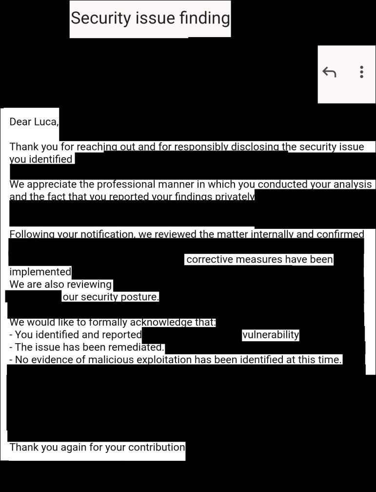

English · Deutsch

Published in European Heart Journal – Digital Health
2× 1st place HHU Ideenwettbewerb · Festival award
Critical vulnerability found and responsibly disclosed
MDR-compliant medical software since 2022
Track record

Peer-reviewed publication · August 2025
monti – AI for Patient Monitoring
AI-based clinical monitoring with advanced ML on high-security patient data
AI-based monitoring platform developed at University Hospital Düsseldorf, using advanced AI methods on high-security clinical patient data to detect complications in heart and oncology patients.
10.1093/ehjdh/ztaf004
Example data
European Heart Journal – Digital Health

Responsible disclosure · March 2026
High-Severity Security Remediation
Critical infrastructure software
Independent security audit of a mission-critical software suite used in highly regulated and highest-tier security environments. Identified a high-severity vulnerability that, under some conditions, posed a risk to physical safety, public security and high monetary losses. The finding was responsibly disclosed and formally acknowledged by the vendor. Corrective measures have been implemented to secure the ecosystem.
What we do
Data Science & AI
- Statistical analysis and modelling you can defend
- Models for monitoring, anomaly detection, prediction
- On-premises RAG and LLM integration, no data leaves your network
- Reproducible pipelines and reports your domain experts can read
High-Security Audits
- Security audits of medical and industrial software (MDR, IEC 62443, FDA guidance)
- Threat modelling and code review for regulated environments
- Formal verification (Lean 4) for critical components
Reverse Engineering
- Analysis of binaries, firmware and undocumented protocols
- Vulnerability research with coordinated, responsible disclosure
- Written findings your engineers can act on
App & Software Development
- Web, desktop and mobile apps, prototype to product
- Backend, systems and embedded code in Rust, Python, C/C++
- Clinical front-ends with access control and audit trails
- Handover with docs, tests and a deployment your team can run
Questions clients ask
Can you work with sensitive patient or company data?
Yes. We design for data minimisation, access control and auditability, and can deploy AI systems such as RAG and LLMs on-premises so sensitive data stays in your network. We can sign an NDA before reviewing project details.
Do you take on small, clearly scoped projects?
Yes. An engagement can begin with a security review, feasibility assessment, prototype or fixed-scope development task. After the free call, you receive a written proposal with scope, timeline and price.
Do you work remotely or on-site?
Both. Most work can be delivered remotely across Germany and Europe. On-site work is also possible; travel and on-site costs are quoted separately based on the location and duration of the engagement.
What do you deliver?
Depending on the engagement: actionable audit findings, production-ready code in your repository, reproducible analysis, tests, documentation and a handover your team can operate independently. We can also deliver complete applications, including backend, deployment and server setup. If you would like ongoing operation, updates or support, maintenance fees may apply and are agreed in advance.
How it works
1. Free call
30 minutes, you describe the problem.
2. Fixed quote
Scope, timeline, price. NDA on request.
3. Delivery
Code in your repo from day one.
4. Handover
Docs, tests, walkthrough.
Start here
Book a free 30-minute call
Calendar loads from Cal.com after you click (privacy policy) · open in new tab
Or describe your project by email
Reply within one business day. Strictly confidential.
PGP: 0x75A3FE23C6311437 · public key